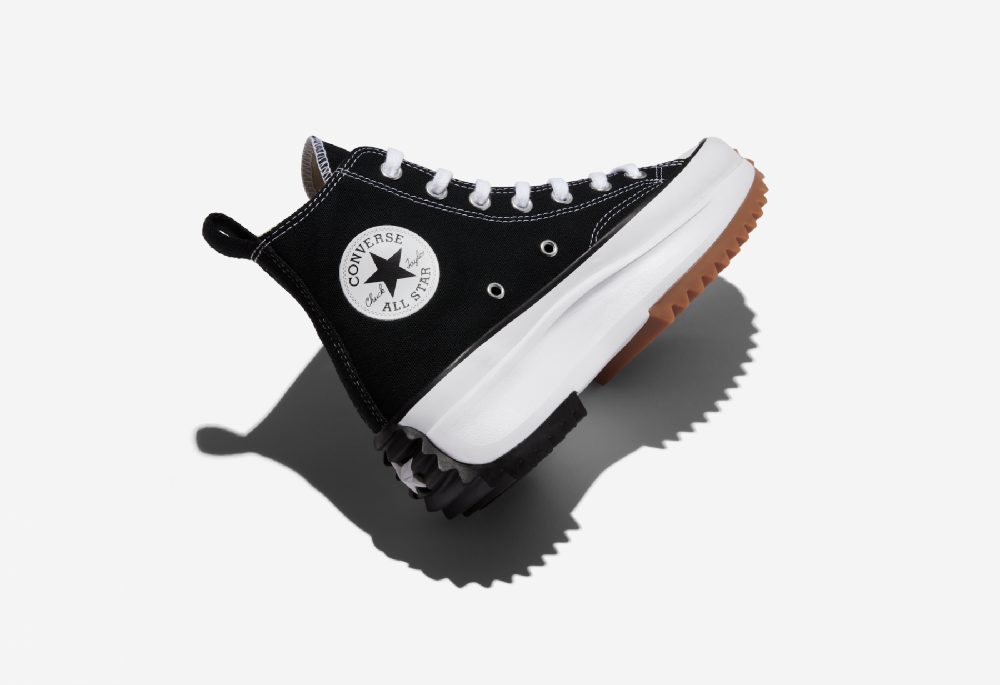

Story and History
Converse, founded in 1908, is a brand deeply rooted in the history of American footwear. The Chuck Taylor All Star,
introduced in 1917, became the brand's iconic sneaker and one of the most recognizable shoes globally.
Originally designed as a basketball shoe, the Chuck Taylor All Star quickly gained popularity and transcended its
athletic roots to become a symbol of rebellion, counterculture, and self-expression.
Converse's history is marked by its association with various subcultures, from punk rock to skateboarding.
The brand's commitment to individuality and creativity has made it a staple in the world of fashion and streetwear.
Chuck Taylor “Low Top in Black”

Colorways
The Converse Chuck Taylor All Star, known for its classic canvas upper and distinctive rubber toe cap,
has been released in countless colorways over the years. From the timeless black and white designs to vibrant
and eclectic collaborations, each colorway tells a unique story.
Collaborations with artists, musicians, and designers have produced limited-edition releases, adding a layer of
exclusivity to the Converse brand. The ability to customize Chuck Taylors further emphasizes the brand's
commitment to personal style.

Cultural Impact
Converse has had a profound impact on popular culture, becoming a symbol of rebellion, artistic expression, and
inclusivity. The Chuck Taylor All Star has been embraced by musicians, artists, and cultural icons, solidifying
its place in the worlds of music, art, and fashion.
From punk rock stages to Hollywood films, Converse has been a consistent presence, representing a laid-back and
authentic style. Its versatility and timeless design make it a choice for individuals across generations and subcultures.